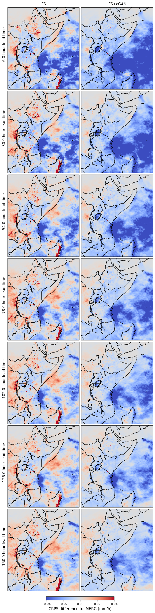
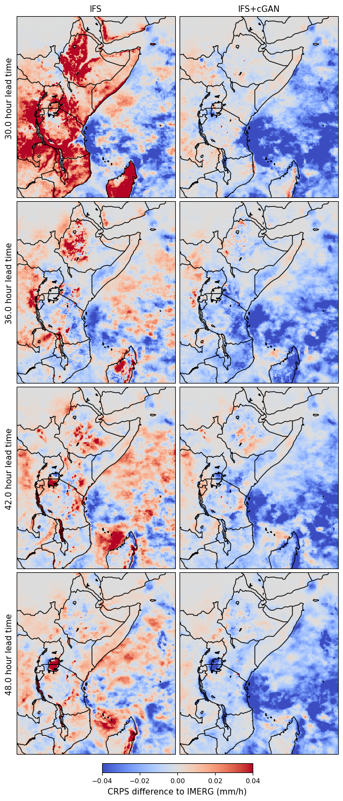

24h rainfall accumulations: The CRPS difference between IFS or IFS+cGAN and the IMERG v7 climatology. Blue means that the model has a lower (better) CRPS. Red means that IMERG has a lower (better) CRPS.

6h rainfall accumulations: The CRPS difference between IFS or IFS+cGAN and the IMERG v7 climatology. Blue means that the model has a lower (better) CRPS. Red means that IMERG has a lower (better) CRPS.
